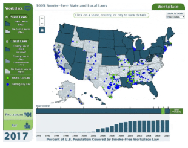

October 2018 Newsletter
Funding Opportunities
Improving Smoking Cessation Interventions among People Living with HIV
R01 Clinical Trial Optional; RFA-CA-18-027
R21 Clinical Trial Optional; RFA-CA-18-028
BRP contact: Annette Kaufman
Posted: August 24, 2018
Expires: January 9, 2019
Register for Nov. 6 informational webinar
Communication and Decision Making for Individuals with Inherited Cancer Syndromes
U01 Clinical Trial Optional; RFA-CA-19-001
BRP contact: Wendy Nelson
Posted: September 10, 2018
Expires: January 10, 2019
Academic Research Enhancement Award
R15 Clinical Trial Required; PA-18-343
BRP contact: April Oh
Notice of NCI Participation posted: July 9, 2018
Expires: January 8, 2021
Modular R01s in Cancer Control and Population Sciences
R01 Clinical Trial Optional; PAR-18-869
DCCPS contact: Scott Rogers
Posted: July 24, 2018
Expires: March 9, 2021
View informational webinar
R01 Clinical Trial Optional; PA-18-738
R21 Clinical Trial Optional; PA-18-739
BRP contact: Tanya Agurs-Collins
Posted: April 3, 2018
Expires: May 8, 2021
Physical Activity and Weight Control Interventions Among Cancer Survivors: Effects on Biomarkers of Prognosis and Survival
R01 Clinical Trial Optional; PAR-18-893
R21 Clinical Trial Optional; PAR-18-892
BRP contact: Frank Perna
Posted: August 7, 2018
Expires: September 8, 2021
NCI releases Annual Plan and Budget Proposal
NCI recently published its FY2020 Annual Plan and Budget Proposal, which provides the President and Congress with an overview of promising research areas and the optimum funding needed to make the most rapid progress against cancer. One of the highlighted research opportunities, “Advancing Public Health in Cancer,” includes the story of Tony, right, a cancer survivor who quit smoking with the help of the NCI-funded tobacco cessation program at Vanderbilt-Ingram Cancer Center. The program is funded through NCI’s Cancer Center Cessation Initiative, which works with cancer centers across the United States to build and implement sustainable cessation programs.
NIH seeking feedback on standards
NIH issued NOT-OD-18-217, a Request for Information (RFI) regarding Registration and Results Reporting Standards for Prospective Basic Science Studies Involving Human Participants. See the notice for more information and the specifics of how to submit ideas by November 12.
Events
November 5 – NCI Webinar: Updated FLASHE Data Resources
This webinar will provide information about new data resources for the Family Life, Activity, Sun, Health, and Eating (FLASHE) study. It will begin at 11 a.m. EST. See the BRP webinar page to register.
November 6 – NCI Webinar: Improving Smoking Cessation Interventions among People Living with HIV
This webinar will provide an overview of the new Request for Applications (RFA) Improving Smoking Cessation Interventions among People Living with HIV (RFA-CA-18-027-R01 Clinical Trial Optional and RFA-CA-18-028 -R21 Clinical Trial Optional). It will begin at 11 a.m. EST. Please submit questions before the webinar to ncidccpsbrpadvances@mail.nih.gov. More information is available on the BRP webinar page.
December 3-5: Science of Dissemination and Implementation Conference
The 11th Annual Conference on the Science of Dissemination and Implementation in Health,  co-hosted by NIH and AcademyHealth, will focus on strategies for scaling up effective interventions across communities, health systems, networks, and countries, and efforts to build capacity for D&I science, with an emphasis on low-resource settings.
co-hosted by NIH and AcademyHealth, will focus on strategies for scaling up effective interventions across communities, health systems, networks, and countries, and efforts to build capacity for D&I science, with an emphasis on low-resource settings.
In the News
Cancer center helping patients quit tobacco
UC Davis Health highlighted tobacco cessation efforts at UC Davis Comprehensive Cancer Center with an article and video  . Patients at the Center are offered free classes, support groups, medications, and counseling to support them to quit. The UC Davis center is one of 22 initial cohort cancer centers funded by NCI’s Cancer Center Cessation Initiative, which is led by BRP Program Director Glen Morgan. The Initiative, as part of the NCI Cancer Moonshot program, recently funded an additional cohort of cancer centers.
. Patients at the Center are offered free classes, support groups, medications, and counseling to support them to quit. The UC Davis center is one of 22 initial cohort cancer centers funded by NCI’s Cancer Center Cessation Initiative, which is led by BRP Program Director Glen Morgan. The Initiative, as part of the NCI Cancer Moonshot program, recently funded an additional cohort of cancer centers.
AACR holds congressional briefing on youth e-cigarette use
On July 18, BRP Program Director Rachel Grana Mayne participated as a panelist in an American Association for Cancer Research (AACR) Congressional Briefing  . The AACR briefing was held on Capitol Hill in Washington, D.C., for policymakers and the public about the current state-of-the-science on electronic nicotine delivery systems (ENDS, commonly referred to as e-cigarettes) and the important public health issues that youth and young adult use of the products present.
. The AACR briefing was held on Capitol Hill in Washington, D.C., for policymakers and the public about the current state-of-the-science on electronic nicotine delivery systems (ENDS, commonly referred to as e-cigarettes) and the important public health issues that youth and young adult use of the products present.
Energy expenditure varies across exercise days, work days, and TV days
The New York Times  wrote about a study by BRP’s David Berrigan and collaborators that looked at how older adults’ time use and energy expenditure varied between days of exercise, prolonged TV viewing, and work. Their paper was published in the American Journal of Preventive Medicine in September. They found that on exercise days, people reduced their other activities, so their daily total physical activity expenditure increased less than expected. The team also noted that their findings on prolonged TV viewing and energy expenditure suggest “a strong link between TV viewing and physical inactivity.”
wrote about a study by BRP’s David Berrigan and collaborators that looked at how older adults’ time use and energy expenditure varied between days of exercise, prolonged TV viewing, and work. Their paper was published in the American Journal of Preventive Medicine in September. They found that on exercise days, people reduced their other activities, so their daily total physical activity expenditure increased less than expected. The team also noted that their findings on prolonged TV viewing and energy expenditure suggest “a strong link between TV viewing and physical inactivity.”
Collaboration required to tackle ‘chemobrain’
The Los Angeles Times  talked to BRP Program Director Todd Horowitz about the call that he, BRP fellow Melissa Trevino, and BRP senior scientist Jerry Suls have issued for collaboration between neuroscience and clinical neuropsychology, to better understand and address cancer-related cognitive impairment, sometimes referred to as “chemobrain.” “We need an infusion of new ideas,” Horowitz told the Times. “Cognitive neuroscience would help us characterize the deficits people have and allow us to connect them to particular brain systems.” Their paper, “A Call for a Neuroscience Approach to Cancer-Related Cognitive Impairment,” was published in Trends in Neurosciences in August. It also received coverage from Medical Xpress
talked to BRP Program Director Todd Horowitz about the call that he, BRP fellow Melissa Trevino, and BRP senior scientist Jerry Suls have issued for collaboration between neuroscience and clinical neuropsychology, to better understand and address cancer-related cognitive impairment, sometimes referred to as “chemobrain.” “We need an infusion of new ideas,” Horowitz told the Times. “Cognitive neuroscience would help us characterize the deficits people have and allow us to connect them to particular brain systems.” Their paper, “A Call for a Neuroscience Approach to Cancer-Related Cognitive Impairment,” was published in Trends in Neurosciences in August. It also received coverage from Medical Xpress  . In September, an article Horowitz wrote explaining the phenomenon
. In September, an article Horowitz wrote explaining the phenomenon  was published in Future of Cancer Care, an independent supplement by Mediaplanet to USA Today (find it in the gray box).
was published in Future of Cancer Care, an independent supplement by Mediaplanet to USA Today (find it in the gray box).
Scientific Advances
TUS-CPS data explore role of smoke-free homes in cessation behavior across income levels
Data from the Tobacco Use Supplement to the Current Population Survey (TUS-CPS), an NCI-sponsored survey of tobacco use administered every three to four years as part of the U.S. Census Bureau’s Current Population Survey, were used in a recent study that showed higher income and smoke-free home rules were associated with a greater odds of 30+ day smoking cessation. Study analysis between lower- and higher-income smokers from the 2002/2003 and 2010/2011 surveys suggested than an increase in smoke-free home rules accounted for up to 36% of the income disparity in 30+ day smoking cessation. These findings have relevance to the recent U.S. Department of Housing and Urban Development (HUD) rule for all public housing agencies to implement a smoke-free policy by July 31, 2018.
Reference: Vijayaraghavan, M., Benmarnhia, T., Pierce, J.P., White, M.M., Kempster, J., Shi, Y., Trinidad, D.R., Messer, K. Income disparities in smoking cessation and the diffusion of smoke-free homes among U.S. smokers: Results from two longitudinal surveys. PLoS One (2018).
International tobacco control research projects can inform policy, practice globally
In a recent paper, BRP grantee Carla J. Berg (lead author), former BRP grantee James F. Thrasher, BRP Program Director Mark Parascandola, and collaborators examined tobacco control research in low- and middle-income countries, including several NCI-funded projects. Their review provides concrete examples of how that research has built the evidence base and informed practice and policy globally, including in the U.S.
Reference: Berg, C.J., Fong, G.T., Thrasher, J.F., Cohen, J.E., Lando, H., Drope, J., Mejia, R., Barnoya, J., Nakkash, R., Salloum, R.G., Parascandola, M. The impact and relevance of tobacco control research in low-and middle-income countries globally and to the US. Addict Behav (2018).
Few US adults associate low physical activity with cancer
Former BRP grantee Erika Waters and a collaborator surveyed U.S. adults, asking what illnesses are caused by insufficient activity. They found that many associated it with cardiovascular and metabolic problems, but few were aware that low physical activity levels can increase risk for a number of other diseases, including cancer. Their paper received a writeup in HealthDay  .
.
Reference: Waters, E.A., Hawkins, E. Awareness of Health Outcomes Associated with Insufficient Physical Activity and Associations with Physical Activity Intentions and Behavior. J Health Commun (2018).
Dermatologist interventions boost sun protective behaviors
BRP grantee Kimberly A. Mallett and collaborators conducted a study in which one group of adults received a brief dermatologist-given intervention on sun risk and protective behaviors and the other did not. Fewer people in the intervention group than in the control group reported sunburns one month later, and the intervention group showed increased sunscreen use across three months.
Reference: Mallett, K.A., Turrisi, R., Billingsley, E., Trager, B., Ackerman, S., Reavy, R., Robinson, J.K. Evaluation of a Brief Dermatologist-Delivered Intervention vs Usual Care on Sun Protection Behavior. JAMA Dermatol (2018).
Interrupting sitting could help children with overweight or obesity
Former BRP fellow Britni Belcher, BRP Program Director David Berrigan, and collaborators studied whether interrupting sitting with short bursts of walking – in this case, three minutes of walking every 30 minutes for three hours – would improve glucose metabolism in children with overweight or obesity, without affecting dietary intake. The findings showed that interrupting sedentary behavior shows promise as an intervention strategy for reducing metabolic risk for that group.
Reference: Broadney, M.M., Belcher, B.R., Berrigan, D.A., Tigner, I.L. Jr, Shareef, F., Papachristopoulou, A., Hattenbach, J.D., Davis, E.K., Brady, S.M., Bernstein, S.B., Courville, A.B., Drinkard, B.E., Smith, K.P., Rosing, D.R., Wolters, P.L., Chen, K.Y., Yanovski, J.A. Effects of Interrupting Sedentary Behavior with Short Bouts of Moderate Physical Activity on Glucose Tolerance in Children with Overweight and Obesity: A Randomized, Crossover Trial. Diabetes Care (2018).
Team reviews existing work on skin cancer interventions
A team including several members with BRP ties conducted an extensive review of skin cancer-related research in their pair of “Skin cancer interventions across the cancer control continuum” papers. The co-authors included BRP Program Directors Frank Perna and Anne Hartman, BRP collaborator Laura Dwyer, and former BRP fellow Jennifer Taber.
Reference: Geller, A.C., Dickerman, B.A., Taber, J.M., Dwyer, L.A., Hartman, A.M., Perna, F.M. Skin cancer interventions across the cancer control continuum: A review of experimental evidence (1/1/2000-6/30/2015) and future research directions. Prev Med (2018).
Reference: Taber, J.M., Dickerman, B.A., Okhovat, J.P., Geller, A.C., Dwyer, L.A., Hartman, A.M., Perna, F.M. Skin cancer interventions across the cancer control continuum: Review of technology, environment, and theory. Prev Med (2018).
Appalachians may regard behavioral prevention differently
Former BRP fellows Elise Rice and Minal Patel, BRP Program Director Kelly Blake, and collaborators used Health Information National Trends Survey (HINTS) (2011-2014) data to explore health beliefs and obesity in Appalachia. They found that compared with non-Appalachians, Appalachians had higher self-reported body mass and were less likely to believe lifestyle factors related to obesity, suggesting that they may be less confident in the behaviors’ effectiveness in reducing obesity risk.
Reference: Rice, E.L., Patel, M., Serrano, K.J., Thai, C.L., Blake, K.D., Vanderpool, R.C. Beliefs About Behavioral Determinants of Obesity in Appalachia, 2011-2014. Public Health Rep (2018).
Study of propranolol for cancer patients shown to be feasible
A new paper from the NCI Network on Biobehavioral Pathways in Cancer, a BRP key initiative, explored the feasibility of recruiting and retaining multiple myeloma patients undergoing hematopoietic cell transplantation for a trial of the beta blocker propranolol. The resulting data “should support further studies that examine propranolol or other potentially-repurposed drugs in other oncology populations,” wrote the team, which included Network members Jennifer M. Knight (lead author), Steve W. Cole, Erica K. Sloan, and Erin S. Costanzo. Sloan and co-author Melinda R. Stolley are former BRP grantees.
Reference: Knight, J.M., Kerswill, S.A., Hari, P., Cole, S.W., Logan, B.R., D’Souza, A., Shah, N.N., Horowitz, M.M., Stolley, M.R., Sloan, E.K., Giles, K.E., Costanzo, E.S., Hamadani, M., Chhabra, S., Dhakal, B., Rizzo, J.D. Repurposing existing medications as a cancer therapy: design and feasibility of a randomized pilot investigating propranolol administration in patients receiving hematopoietic cell transplantation. BMC Cancer (2018).
Extensions could strengthen Affect Regulation in Cancer (ARC) framework
BRP Program Director Rebecca Ferrer offered a commentary on the Affect Regulation in Cancer (ARC) framework, which she said raises “questions that should be answered for it to reach its full potential.” To extend the framework, she suggested questions that could be answered within it, cancer contexts in which to apply it, benchmarks to use in defining whether a regulatory pattern is effective, and more.
Reference: Ferrer, R.A. Optimizing the utility of the ARC Framework. J Health Psychol (2018).
Career and Training Opportunities
FEDERAL POSITION: Program Director, Behavioral Research Program
NCI invites letters of interest from scientists interested in behavioral risk factors for cancer to join the Behavioral Research Program as a Scientific Program Director. Read the position description »
FELLOWSHIP: Health Behaviors Research Branch
The program invites applications from qualified candidates for a full-time fellowship position in innovative, interdisciplinary health behavior research. Read the position description »
FELLOWSHIP: Behavioral Research Program
The program invites applications from post-doctoral candidates with interest and expertise in dyadic relationships and social processes. Read the position description »
Resources
Skin Cancer Prevention Progress Report
The 2018 Skin Cancer Prevention Progress Report by the CDC provides a comprehensive summary of the latest available data and highlights recent developments and success stories. Recent successes include a slight decrease in the incidence of melanoma among teens and younger adults, and a reduction in the prevalence of indoor tanning among adults and high school students, including demographic subgroups with the highest use of indoor tanning. Read the report »
NCI Tobacco Policy Viewer facilitates smoke-free policy data analysis
The NCI Tobacco Policy Viewer is an interactive online resource to map, query, and download historical smoke-free policy data in the United States. The tool reveals variation across U.S. cities, counties, and states by the types of indoor areas that are smoke-free, length of time since the smoke-free policy came into effect, and number of people who are protected by the policy. Learn more about the tool »
GeoFLASHE dataset now available
GeoFLASHE is a recently released dataset of neighborhood and contextual variables pulled from the Family Life, Activity, Sun, Health, and Eating (FLASHE) study, which collected survey data on psychosocial, generational (parent-adolescent), and environmental correlates of cancer-preventive behaviors from adolescents and their parents. The main variables in the geoFLASHE dataset are neighborhood socioeconomic status, UV exposure, and neighborhood characteristics associated with walkability. These new data can be linked with existing FLASHE variables to provide an additional analytic dimension based on home and school locations. A methods report details how these variables were created and how they can be used to augment FLASHE data analysis. Learn more about FLASHE »
Smokefree Women tobacco cessation website gets redesign
The Smokefree.gov team recently launched a refreshed version of Smokefree Women (SFW). The effort was led by BRP Public Health Advisor Meredith Grady and BRP fellow Annie Beach. SFW is a public-facing tobacco cessation website designed to address the unique challenges that some women face as they quit smoking cigarettes. It includes audience-specific information about common issues for female smokers, such as weight gain, support while quitting, relationship changes, and quitting before, during, or after pregnancy. Site visitors can opt-in to customized text message resources, like SmokefreeMOM for pregnant women and new moms, and engage with the supportive community found on the SFW Facebook page  . SFW is part of the NCI’s Smokefree.gov initiative to provide smokers with evidence-informed content, resources, and support—wherever they are on their smoke-free journey.
. SFW is part of the NCI’s Smokefree.gov initiative to provide smokers with evidence-informed content, resources, and support—wherever they are on their smoke-free journey.